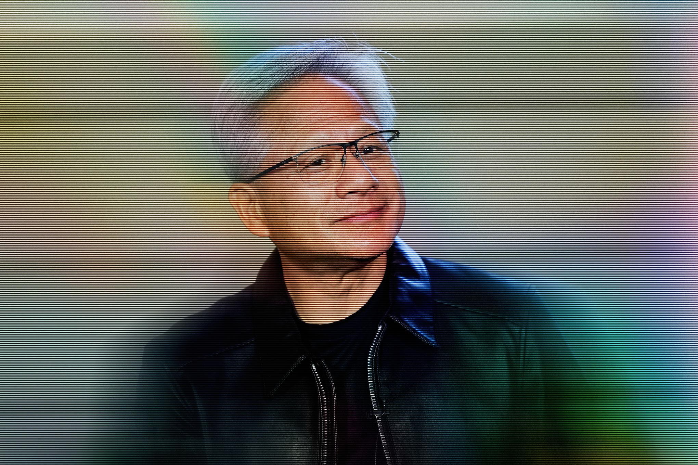

23 ноября 2026 года NVIDIA опубликовала пресс-релиз: совет директоров единогласно проголосовал за возвращение Дженсена Хуанга на посты президента, CEO и члена совета, «эффективно немедленно». Это произошло меньше чем через две недели после его внезапной отставки — прошло ровно 12 дней. Сам Хуанг прокомментировал так: «Я честь для себя считаю возможность вернуться в NVIDIA и руководить одной из самых значимых технологических компаний мира».
Причина отставки — сообщения о том, что Хуанг мог стать мишенью китайской разведывательной операции; после них совет запустил проверку. В заявлении совета говорится, что он получил информацию «от высшего руководства правительства США» и счёл возвращение Хуанга не представляющим риска для национальной безопасности. Расследование, впрочем, продолжается — при поддержке и сотрудничестве самого Хуанга. Генеральный прокурор США, по словам Белого дома, подтвердил: доказательств противоправных действий с его стороны у правительства нет.
Временный CEO Клет Кресс остаётся на позиции финансового директора (CFO), а недавно назначенный председатель совета Харви Джонс сохраняет свою роль. То есть временная структура управления не демонтирована — к Хуангу просто вернули его прежние функции. Рынок отреагировал спокойно: лидеры техиндустрии в соцсетях встречали новость одобрительно.
NVIDIA — главный поставщик вычислительной мощности для ИИ, и двухнедельный вакуум у её штурвала был самым тревожным сюжетом для всей отрасли: от планов дата-центров до цепочек поставок GPU. Прецедент тоже показательный: совет директоров крупнейшей чипмейкерской компании публично признал итоги собственного расследования и вернулся к прежнему руководителю за полторы недели — без суда, без отчётов наружу, с опорой на закрытые консультации с властью.